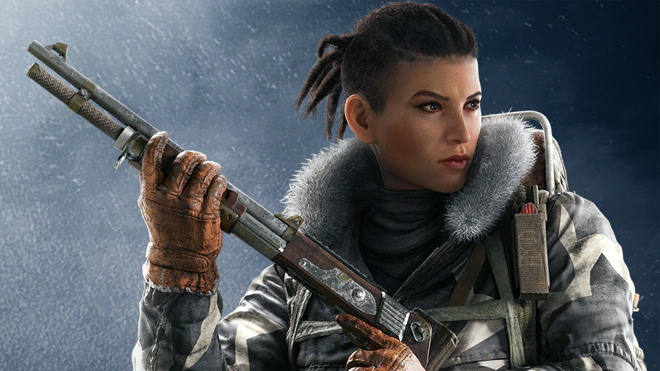
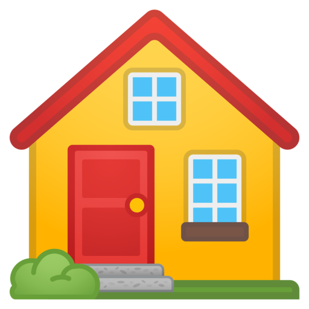
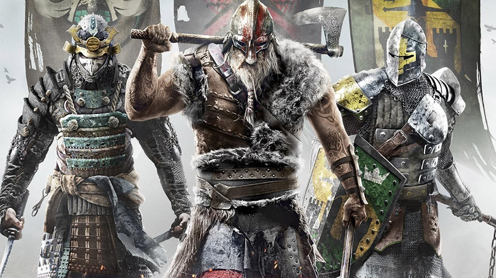
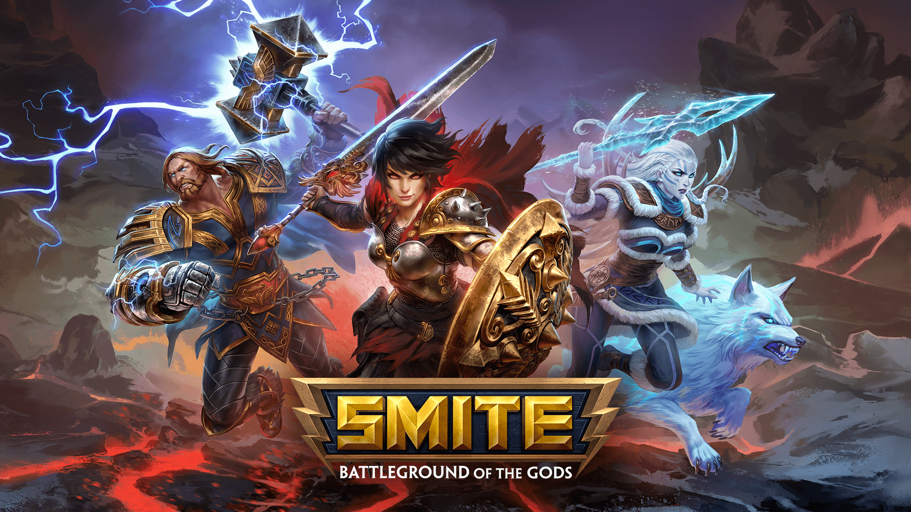
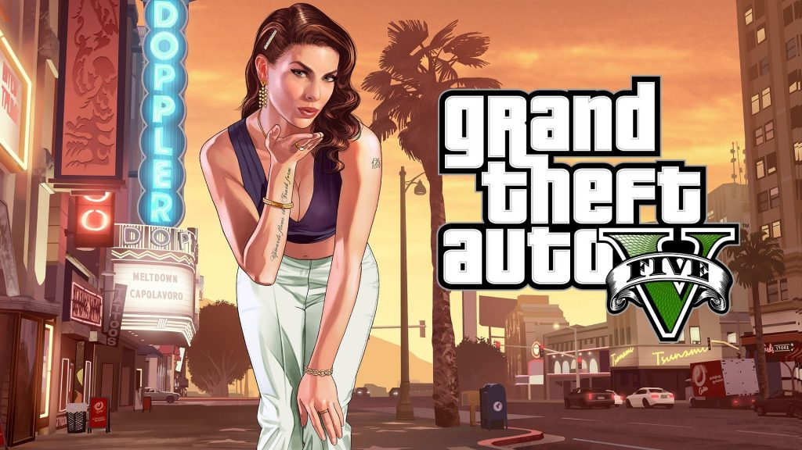

Tom Clancy's Rainbow Six: Siege es un videojuego de disparos en primera persona táctico multijugador de 5 vs 5 en el cual hay 3 modos de juego, "Desactivar la bomba", "Capturar el objetivo" y "Protección del rehén", también tiene 7 modos de juego, está desarrollado por la empresa Ubisoft Montreal y distribuido por Ubisoft para las plataformas PlayStation 4, Xbox One y Microsoft Windows. El juego fue anunciado en la conferencia de E3 en junio de 20141 y, tras ser retrasado, su fecha de lanzamiento se produjo el 1 de diciembre de 2015.
Raimbow Six Siege



